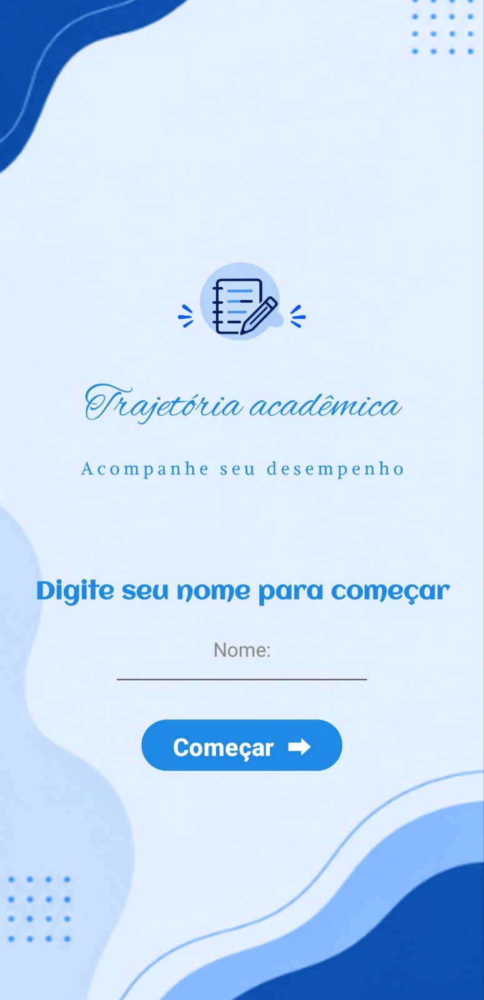

O que é?
Uma ferramenta para registrar e consultar informações importantes da vida escolar.
Acompanhe notas, atividades e sua evolução escolar em um só lugar com o Trajetória Acadêmica.
IF IFPB — Campus Santa Luzia • Curso de Informática

SOBRE O PROJETO
O Trajetória Acadêmica é um aplicativo Android desenvolvido para estudantes que desejam organizar suas informações escolares e acompanhar o próprio desempenho ao longo dos bimestres.
Uma ferramenta para registrar e consultar informações importantes da vida escolar.
Foi pensado para estudantes que querem acompanhar suas notas e atividades.
Facilitar a organização e ajudar o estudante a observar seu desempenho acadêmico.
O QUE VOCÊ ENCONTRA
Recursos para registrar informações escolares e acompanhar o desempenho com mais praticidade.
Cadastre e acompanhe as notas obtidas nas avaliações escolares.
↗Visualize a evolução das médias ao longo dos bimestres.
↗Calcule as notas necessárias para acompanhar suas metas acadêmicas.
↗Registre atividades acadêmicas e acompanhe seu andamento.
↗Consulte e acompanhe as notas organizadas por matéria.
↗POR DENTRO DO APP
Confira as imagens reais que fazem parte do material do projeto. Clique em uma imagem para ampliar.
As imagens são as originais enviadas pelas desenvolvedoras e são exibidas por inteiro, sem cortes.
ASSISTA E CONHEÇA
Veja a demonstração em vídeo e conheça melhor as telas e funcionalidades do aplicativo.
Confira o vídeo preparado pelas desenvolvedoras e veja como o aplicativo ajuda a organizar notas, acompanhar médias e controlar atividades escolares.
Assistir no YouTube O link abre o vídeo no YouTube em uma nova aba.QUEM FAZ ACONTECER
Projeto desenvolvido no curso de Informática do IFPB — Campus Santa Luzia.
Estudante do curso de Informática.
Ver QR code do perfil ↗